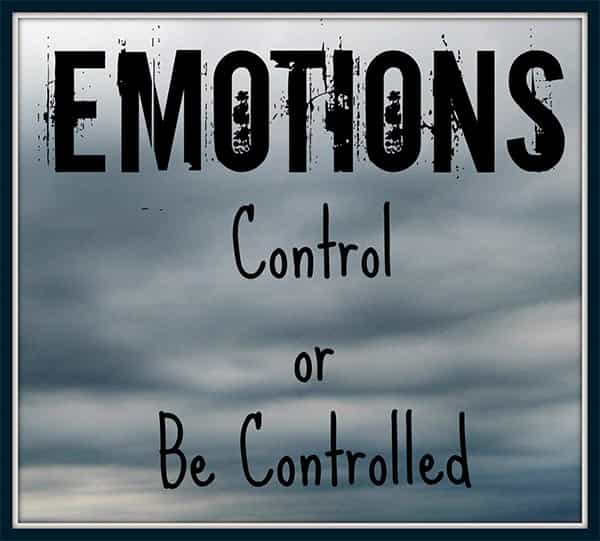

André is a young European who left his decaying country in 2012 for greener pastures. He enjoys exploring subterranean places, reading about a host of interconnected topics, and yearns for Tradition.


Unless you are younger than 20, Robert Kiyosaki’s name should sound familiar. This Japanese-American man has become well-known in 1997 thanks to his book Rich Dad, Poor Dad, which contained a series of parables and easy-to-read stories about wise capital management. The book has become a bestseller, been translated in numerous languages, and Kiyosaki has been milking his “rich dad” brand as much as he could by writing up to 15 “Rich Dad” books, producing a “Rich Dad” video game and co-writing two books with The Donald.
Now, Kiyosaki took an awful lot of criticism. He has been under fire for allegedly giving irresponsible advise, forcing book sales through multi-level marketing, making up stories he then told as if they had really taken place and so on. I didn’t bother much—before I found someone selling a volume of the original Rich Dad, Poor Dad book for $0.20 on a flea market. For such a low price, I had nothing to lose.
I’ve read Rich Dad, Poor Dad in a couple of days. Then some other texts from Kiyosaki. To be sure, his advice is sometimes simplistic and redundant, but overall I found it helpful and interesting.
To a red-pilled individual, this could sound trite. In 1997, this was not—and still today the hip, trendy stuff branded as entrepreneur looks more like a surrogate than like true entrepreneurship.
Kiyosaki compares the entrepreneur with the employee: the second is told what to do, he went to college and got a job because he was told this was the road to a successful life, pays huge taxes on his wage and ducks his head when the HR fatties are out.
The entrepreneur, however, does not answer to a HR department. Whether he works off the books, goes freelance or owns a company, the entrepreneur is looking to make work instead of asking for a job, pays as little taxes as he can, and lives life according to his own terms. He is loyal to his own and opportunistic elsewhere instead of getting screwed like a beta cog.
Rich Dad, Poor Dad tells of how an entrepreneur who consciously focuses on what he wants—whether it is money, girls or anything else—feels no shame for wanting to thrive, looks for opportunities and creates them when he can. For example, Kiyosaki explains how, as a child, he allegedly picked up used comics to create a comics library and make other children pay to access it. While the story in itself may be doubtful, it is fun and a good example of the entrepreneur mindset.
According to Kiyosaki, accounting should be considered a basic life skill. Learn to count your income and expenses, make a balance sheet and see how the dollar keeps getting out of your pocket. Better yet: look at life through the dichotomy of assets and liabilities. Assets put money in your pocket, liabilities take it out.
While Kiyosaki goes a bit far by saying that “your home isn’t an asset”—at least being a home owner allows you not to get bled dry by the rent—thinking this way motivated me to stop drinking a beer or two almost every night, go for the cheapest meat cuts and replace the gym by calisthenics. The best mindset when you’re bulking on a budget.
Under the guise of financial wisdom, this one is a bit cynical. On face value, when you invest money or capital in the right place, the money starts working for you. It makes income, and you’re getting richer without having to toil. Behind the words, Kiyosaki’s advice is to stop getting exploited and become an exploiter instead. Stop investing in mutual funds or other Wall Street-managed bullshit—invest in real estate and companies so that “the capital works for you.”
Having money working for you means creating your own system and making others join it so that they pay you. It can be a company, a piece of real estate, or anything people will inject money or work in. Money doesn’t produce anything by itself: the capital “makes money” because someone else is working or at least paying. Meh. The world being what it is, I’ll still take it.
You always have something you can invest. The trendy thing to do now is investing in Bitcoin. If you don’t have much money, you still have time and work ability. You can invest it in learning a skill, in getting knowledge, in tinkering or experimentating or networking. Anything that can turn into a well-paid skill, niche, or option. Anything that can become an asset. Everything which is a capital, time included, can be invested. Diversion is a way to waste time and money. The System made us addicted to useless crap so that we keep feeding it instead of feeding ourselves.
Here Kiyosaki doesn’t say much more than, say, Benjamin Franklin. He still says it with updated stories and more enthusiasm.
In his Republic, Greek philosopher Plato warned us of how aspiring oligarchs took advantage from young people’s foolishness to propel them into a lifestyle of debt-sustained partying whereas they worked hard to take as much of the city as they could. Kiyosaki’s advice is to behave like Plato’s aspiring oligarch.
Stay clear of useless expenses, but if someone else is willing to spend, then by all means offer him an opportunity to do so—at your benefit. Someone has to do the actual work after all, and you’re better off if someone else is doing it for you and if you’re doing it for your own instead of remaining a wagecuck.
Perhaps Kiyosaki’s best advice: work in a manner that does not force you into either paying taxes or putting your own skill in the service of someone else’s dream. Cut the middlemen. Start your own company. Get direct relationships with customers—no boss, no CEO. The world we live in was made complicated so that we would work for someone else and pay unknown people for everything.
To counter this, you must both secede from an exploitive, hostile system, and create a tribe or network solid enough so that you can work in synergy with trusted others instead of relying on Silicon Valley’s stuff.

All too often, we start feeling something and our choices are subtly determined by our emotion. This should not happen. Kiyosaki tells how he allegedly worked for free at his rich dad’s convenience store. After several weeks, young Robert was frustrated and angry with receiving nothing in exchange for his efforts. He asked his rich dad for a pay raise. “Sure”, rich dad answered, “how much do you want? $5 per hour? $10? $20? Hey, I can even pay you $50, what do you say?”
At first, young Robert was startled and excited. But when his rich dad mentioned a $50 per hour wage, he started to see the whole situation as absurd. Why would a convenience store owner pay a child clerk $50 per hour? This made no sense. Then, rich dad added that he had just told that to show young Robert how much power a boss could have, and to stop thinking like an employee hoping for a pay raise.
The inability to manage one’s emotions has another name: immaturity. If you are easily triggered, if emotions tend to overwhelm you and cloud your rational processes, you’re vulnerable and immature. The Ancients used to classify virtues and passions. I wrote some pieces on the latter so that they are easier to spot when they kick in.
Conversely, the soy boys promoted by the System have a high-pitched voice and all sorts of exaggerated mannerisms that denote the exact opposite of emotional stability. Kiyosaki chose patriarch Trump over these.
When Rich Dad, Poor Dad started selling well, Kiyosaki profited off his fame and wrote many books with lots of redundant advice. Still, some of his related stuff—for example, Garrett Sutton’s Start Your Own Corporation, officially endorsed by Rich Dad author—is rather interesting, and all of it has a good vibe which makes it both easy to read and enlightening when you didn’t have much financial education.
Something I liked much from Kiyosaki is, he’s not trying to make you a prisoner of his own world. Instead, he encouraged his reader to read from various sources, tinker with investments, learning skills and so on. He never asks to follow blindly anything he says or whatever. His demeanor is much less sectarian than your usual leftist’s, and he is much less pretentious, too, despite some grandiose or sugarcoated claims. I will gladly prefer some of his cynicism over the pseudo-good intentions of anyone defending the nightmarish brave new world we have been thrown into.
A word of caution. Kiyosaki was born in 1947. He thrived at a time when there was a lot of room to invest, low interest rates and a booming real estate market. He didn’t have to carry on in a world where the previous generation—to us, boomers—plus Big Corp keep most of the money, the young are cash-strapped and jaded, and SJWs lurk at the corner. Getting rich today seems way more difficult. Whatever: Kiyosaki’s mindset and some of his advice are solid, and who knows what hidden opportunities you can stumble upon when you’ve got it right.
Read Next: 9 Easy Ways To Save A Ton Of Money